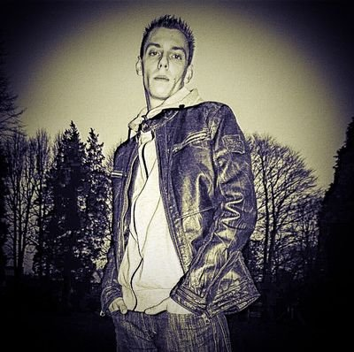

Ich bin Hobby-DJ und lege gerne und viel auf.
Außerdem produziere ich mittlerweile auch Jingles, Musikzusammenschnitte und entwerfe Covers und Flyer.
Wie es dazu kam...
Da mein halbes Leben aus Musik besteht und ich gerne
andere mit meiner Musik erfreue, kam bei mir der
Gedanke auf mich als Hobby-Discjockey ( DJ ) zu versuchen.
Also habe mich über das Thema Discjockey schlau
gemacht und mir das entsprechende DJ-Equipment
gekauft. Schon bald hatte ich meine erste
Radiopremiere...
Und so ging es weiter...